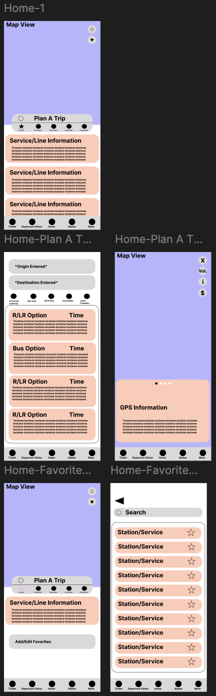
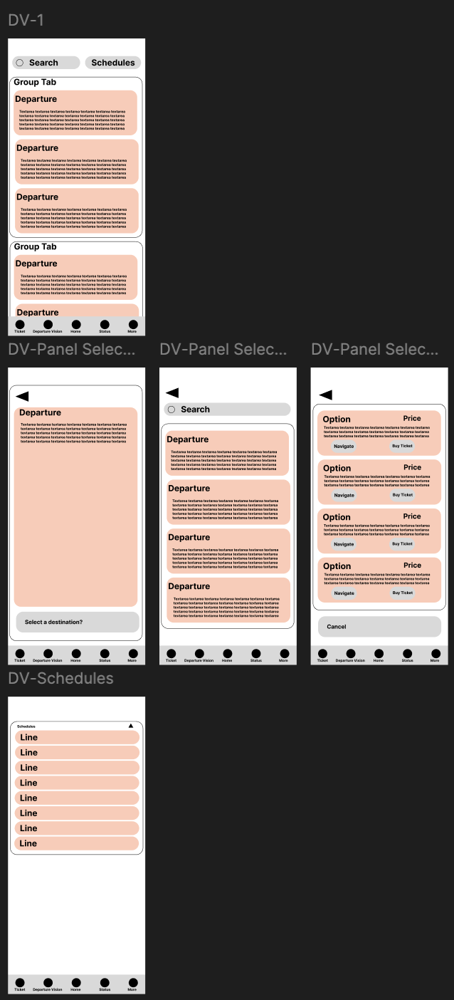
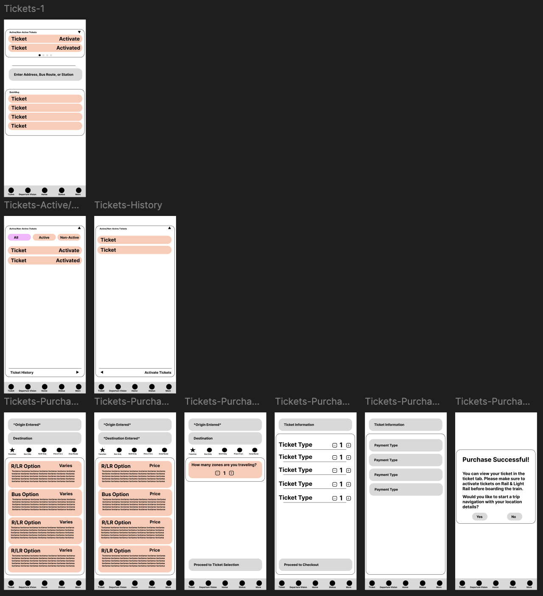
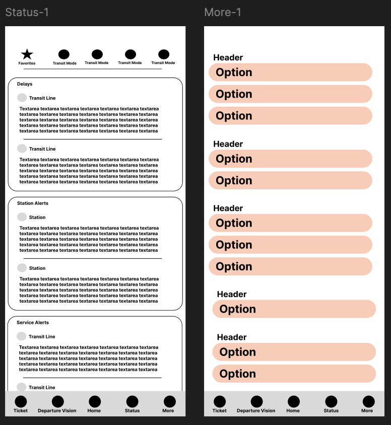

Introduction & Project Overview
I was invited to a friend’s in NYC, and as someone who lives in South Jersey,
I considered public transportation over a two-hour drive. Using the NJ Transit
app, I planned a multi-step journey across systems. While it helped, there were
consistent frictions. This project explores how NJ Transit’s digital presence could
be reimagined through competitive research, user feedback, and a design process to
serve all travelers better. A slideshow summarizing the findings below can be found here.
Market Research & Benchmarking
To better understand what could be added, changed, removed, or kept the same, I conducted
a thorough research on 6 apps (MTA App, Ventra, EL Tracker, ProximiT, SEPTA, and Transit).
The apps are a mix of applications made directly from their respective transit authority,
third party applications for a specific transit system, and a all-around application used
for any transit system. I collected an understanding of the user flow, features, buying process,
accessibility in both navigation and app usage, preferences, ease of planning trips, design concerns,
feedback and praises, and overall user experience. Below is a chart showcasing the findings in each app:
|
App
|
Features
|
Benefits
|
Feedback
|
Accessibility
|
Ease of Planning Trip
|
UX Tone
|
|
MTA
|
Alerts, Map, Account/Profile, Schedules/Arrivals, Trip Planning
|
Good improvements from previous app (app store);
Visually is better than previous app (app store);
|
Leaves out the most logical routing possible creating inaccessible routes (reddit);
Train information is not always accurate (reddit);
No way to store addresses (ie home or work) instead of favorite routes (reddit);
Train disruptions - Scroll throw each in individual rows instead of grouping them together (reddit);
Buses are not shown on route (ie if a bus is dealyed you can't see that based on "the bus is at the next stop" because it could be there for 1 or 20 minutes) (app store);
Bus info (app store);
Clunky (app store);
Widget (app store);
Can't buy tickets Metro North or LIRR tickets (app store);
|
N/A
|
9
|
Functional
|
|
Ventra
|
Alerts, Map, Account/Profile, Schedules/Arrivals, Ticketing
|
Easy to use (app store);
All in one app (see schedule, purchase tickets, etc.) (app store);
|
Bus inaccuracy (reddit);
Metra purchase button is too low on the screen (app store);
You can't remove favorites (app store);
Long time to create an account and receive tickets (app store);
Inaccessible (app store);
Not intuitive (app store);
|
Overall the CTA is not the best. The VoiceOver actually sounds human like and gives you a information in a sentence form unlike the MTA app.
|
7
|
Professional
|
|
EL Tracker
|
Alerts, Map
|
Live train/Bus Map (reddit);
Clean and Organized (app store);
Widgets (app store);
Bus tracking (app store);
|
Bugs here and there (app store/reddit);
|
VoiceOver doesn't work the best on the app as it is solely reading the text. Additionally, the color contrast is good, but once again, color blind users will have a hard time navigating this.
|
1
|
Friendly
|
|
ProximiT
|
Schedules/Arrivals, Alerts, Map, Ticketing
|
Live times for trains and buses (reddit);
Exact timing of trains (app store);
Good for low vision individuals (app store);
Very accurate (app store);
|
Update lines (app store);
Inaccurate train times (app store);
Weather advisory/service issues (updating the app) (app store);
|
VoiceOver reads whats on the screen (no metadata). May not be helpful for low vision users. Color contrast is god otherwise, but should be able to switch between light and dark mode
|
1
|
Functional
|
|
SEPTA
|
Alerts, Map, Account/Profile, Schedules/Arrivals, Trip Planning
|
Train Numbers displayed everywhere (app store);
Many like the new update (app store);
|
Only realtime information (no original scheduled time/delays) - no "arriving in" function (reddit);
Accuracy (reddit);
No Widgets or platform features (reddit);
Load SEPTA card in Apple Wallet (reddit);
Clunky interface (app store);
UX concerns (app store);
|
VoiceOver only shows what is on screen with no additional metadata sadly.
|
9
|
Friendly
|
|
Transit
|
Account/Profile, Alerts, Map, Ticketing
|
Integrates across various areas including non major areas (reddit);
Bus accuracy (reddit);
Open Source API (reddit);
Apple watch integration (reddit);
|
Paywall (reddit);
No Timetables (app store);
Ghost buses (app store);
|
Color contrast is not the best for glanceability/scanning
|
10
|
Friendly
|
Based on the market research on mobile apps, users shared that the following are helpful in a transit app: trip planning (having a clear trip planning function including in-app GPS), real-time maps and arrival data, alerts and notifications (especially for service changes, platform arrivals, etc.), in-app ticket purchasing, account & profile management (saving favorite stations, lines, address, and travel information), accessibility support, compatibility with widgets and smart watches, UI clutter, planning flows, and information inaccuracy.
Additonally, I compared the MTA webpage with NJ Transit's to see what could be changed.
|
Dimension
|
MTA Strengths
|
NJ Transit Gaps
|
Design Opportunity
|
|
Navigation
|
Mode-specific, clear
|
Broad, cluttered, news-heavy
|
Add mode-segmentation, trim non-essential items
|
|
Real-Time Info
|
Interactive maps, live data
|
No real-time info, outdated trip planning
|
Build live tracking, real-time arrival interface
|
|
Mobile UX
|
Responsive, polished
|
Non-responsive, outdata
|
Optimize for mobile-frist, responsive design
|
|
Communication
|
Service alerts, public radar map
|
Poor alerts, limited communication
|
Integrate alerts and disruption messaging functionality
|
|
Visual Design
|
Clean, modern, accessible
|
Cluttered and outdata
|
Refresh brand styling and accessibility
|
User Research
Based on a survey of NJ Transit users, I gathered data on their behaviors and frustrations with the app. Users mainly highlighted that
-
Several features were frustrating including push notificaitons, desnity accuracy, trip planning layout, outdata navigation, and rough UI.
-
The app seems to be overwhelming and redundant.
-
Most users abandon the app mid-journey.
Users wanted to see more intuitive navigation, more usage of notifications, possible SMS alerts, adding DepartureVision screens and announcements for every station, and
more transparency on delays.
Opportunities for Improvement
Current State Analysis
The current NJ Transit app offers a wide range of features, but delivers them through a fragmented and inconsistent experience. The home screen leads with promotional content and presents the user with a long list of options including ticket purchasing, DepartureVision (real-time train departures), MyBus, My LightRail, schedules, trip planner, and rider tools. Ticket purchasing is generally functional, with options to buy rail, bus, and light rail tickets and view past purchases, but requires account creation, which frustrates many users. DepartureVision provides useful train tracking, capacity information, and map integration, but lacks real-time auto-refresh and can be cumbersome to navigate. MyBus and My LightRail flows are difficult to use, with long station lists and unclear navigation paths. The trip planner is limited, offering basic routing with some accessible options, but lacking clear guidance or real-time adjustments.
Design-wise, the app maintains decent visual hierarchy and consistent iconography, but feels outdated and clunky overall. The color system and typography are serviceable but uninspired. Information density is a major pain point; key content is scattered across redundant pathways, making navigation confusing and overwhelming. Users report frequent friction in planning trips and finding information, especially for buses and light rail. Common complaints include the required account creation, lack of Spanish language support, inaccurate zoning info, missing platform details for light rail, poor trip tracking, and lack of actionable alerts. Users also request better DepartureVision functionality, more robust bus information, clear transfer guidance, and improved push notifications for real-time events.
Compared to other transit apps analyzed in this study, the NJ Transit app lags behind in several key areas. Apps like MTA and SEPTA offer more intuitive trip planning and real-time tracking experiences, with stronger mobile responsiveness and clearer information hierarchies. Competitors often provide home screen widgets, customizable alerts, and better integrated maps, which NJ Transit currently lacks. While NJ Transit’s ticketing flow is functional, the broader navigation and content structure do not match the clarity and polish seen in the best apps in this space. Moreover, accessibility options remain basic, whereas top apps offer stronger language support and more inclusive design patterns. Overall, the NJ Transit app demonstrates functional breadth but suffers from poor usability, outdated design, and critical gaps in real-time communication and accessibility, presenting a clear opportunity for a modern, user-centered redesign.
Summary of Improvements
- Visual redesign and improved information hierarchy.
- Widget and smartwatch compatibility.
- Accessibility enhancements including screen reader support and scalable fonts.
- Modular homepage with live service cards.
- Post-trip feedback and better history tracking.
To find the full Case Study, click here.
Design Brief
Below is a summary of the design brief. The full design brief can be found here.
Project Summary: Full-scale redesign of NJ Transit’s app and site to modernize UI, improve usability, and enhance access for all users.
Target Audience: Commuters, first-time riders, accessibility-focused users, and multi-modal travelers.
Key Goals:
- Improve trip planning, real-time info, and UI hierarchy
- Add accessibility features including color contrast, scalable fonts, and screen reader compatibility
- Make account creation optional
Design Process
The redesign included:
- Wireframing and flow restructuring
- Building prototypes for homepage cards, alerts, and trip planners
- Establishing a modern visual style with friendly tone and reduced clutter
- Iterative testing and revision based on user feedback
Initial Wireframes
This set of wireframes reimagines the NJ Transit mobile experience
with a focus on seamless multimodal travel and user-centric design.
The redesigned Home screen integrates an interactive map, a trip
planner, and personalized service information that dynamically
adapts based on the user’s location. Users using the in-app GPS
also have the ability to purchase tickets while enroute. Departure Vision streamlines
access to real-time departures, favorite stations, and searchable
schedules combining Departure Vision with myBus and myLightRail in
the NJ Transit app. The Tickets
section unifies ticket purchasing for all transit modes, allowing
users to effortlessly navigate to their destination post-purchase.
A dedicated Status tab keeps riders informed with timely service
alerts, while the More/Account area expands customization options
for greater control and personalization. This design emphasizes
simplicity, efficiency, and a cohesive experience across all transit
services.




Icons
A total of 59 icons were made for each rail/light rail system as well as two updated handicap
icon and a negative version of the bus icon. The image of each rail system has the abbreviation
attached to them to add a third layer of association to the specific line: image, color, and abbreviation.
New transit riders, riders in unfamiliar areas, and more seasoned riders would be able to better understand
which lines are which. Additionally, new abbreviation icons were made in the style of the NJ
transit logo for additional use in tickets, DepartureVision, etc. while the oval logos would be used
for navigation. Below are some samples of the icons made for this redesign project.
Final Outcome (In Progress)
The final design includes a responsive homepage, trip planner with live data, simplified ticketing, and customizable widgets. The UI is accessible, responsive, and user-friendly, aligned with NJ Transit’s vision of inclusivity and reliability.